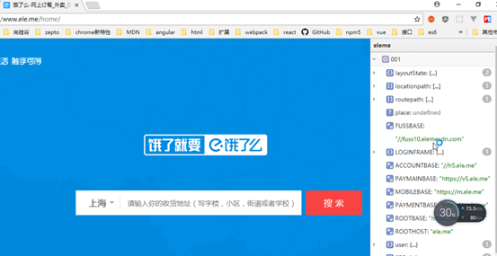
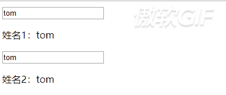

Angular入门笔记原文出处:本文由博客园博主superjishere提供。
原文连接:https://www.cnblogs.com/superjishere/p/11485079.html
自己总结的尚硅谷Angular课程笔记
1.入门介绍
1.1AngularJS是什么？
jQuery是js函数库
Angular是Google开源的JS结构化框架
官网：https://angularjs.org/
1.1.1AngularJS特性和优点
耦合度越低越好，避免牵一发而动全身的事情发生
1.1.2与jQuery比较
angular：在页面和内存之间建立管道，让数据在管道里来回流动
1.1.3AngularJS能做什么项目
构建单页面（SPA）Web应用或Web App应用
1）单页面应用（SPA）：single page application
特点：
1.将所有的活动局限于一个页面
2.当页面中有部分数据发生了变化，不会刷新整个页面，而是局部刷新
3.利用的是ajax技术、路由
2）
使用插件可以看到网页里使用的angular相关数据

没有使用angular会提示
1.1.4关于版本的问题
学的是1.*版本，而AngularJS还有2.*和4.*
1.*的版本采用的事JavaScript的语法
2.*和4.*用的事typescript的语法
1.2开发第一个AngularJS应用
1.2.1例子
实现效果：
1）jQuery实现
引入jQuery库
|
<!DOCTYPE html>
<html>
<head lang="en">
<meta charset="UTF-8">
<title></title>
</head>
<body>
<input type="text" id="name">
<p>您输入的内容是：<span id="contentSpan"></span></p>
<script type="text/javascript" src="../../js/jquery/jquery-1.11.1.js"></script>
<script type="text/javascript">
$(function () {//document.ready文档加载完毕(页面的结构) 原生：window.onload:整个页面加载完毕，包括图片。。。
$('#name').keyup(function () {
var name = this.value;
$('#contentSpan').html(name);
})
})
</script>
</body>
</html>
|
2）Angularjs实现
引入angularjs文件
<script src="../../js/angular-1.2.29/angular.js"></script>
|
<!DOCTYPE html>
<html>
<head lang="en">
<meta charset="UTF-8">
<title></title>
</head>
<body ng-app>
<input type="text"
ng-model="username">
<p>您输入的内容是：<span>{{username}}</span></p>
<script src="../../js/angular-1.2.29/angular.js"></script>
<script type="text/javascript">
</script>
</body>
</html>
|
3）理解第一个angularjs应用
1.2.2Webstorm设置
手动设置：
file→settings→editor→live templates
导入设置：
file→import settings
1.2.3引入AngularJS
使用<script>引用AngularJS源文件
1). 本地引入:
angularjs.js
2). 在线远程引入(CDN):
http://cdn.bootcss.com/angular.js/1.5.5/angular.min.js
1.2.4使用AngularJS
在页面中使用Angular的指令和表达式，在谷歌浏览器上使用ng-inspector插件
ng-app(指令) : 告诉angular核心它管理当前标签所包含的整个区域,并且会自动创建$rootScope根作用域对象

ng-app生成的
ng-model : 将当前输入框的值与谁关联(属性名:属性值), 并作为当前作用域对象($rootScope)的属性
{{}} (表达式) : 显示数据,从当前作用域对象的指定属性名上取
1、表达式：通常有一个返回值，可以放在任何需要值得地方，比如函数调用的参数，一个变量名，一个运算，
2、语句：通常表示一个完整的执行单位，一段完整的js可执行的代码，有的语句也可以用表达式来执行，叫做表达式语句。
3、区别：语句用分号结尾，有些语句我们没有加分号，比如console.log虽然我们没有加分号，但也是语句，因为js引擎会自动解析并且加上分号。
4、特例：if语句，就不用加封号 可也是完整的语句
2.四个重要概念
2.1双向数据绑定
2.1.1数据绑定
数据从一个地方A转移(传递)到另一个地方B, 而且这个操作由框架来完成
- View（视图）：
页面（标签、指令，表达式）
- Model(模型) ：作用域对象（属性、方法）
- 数据绑定：
数据从一个位置自动流向另一个位置
- View-->Model
- Model-->View
- 单向数据绑定：
只支持一个方向
- View-->Model ： ng-init
- Model-->View : {{name}}
- 双向数据绑定
- Model<-->View : ng-model
- angular是支持双向数据绑定的
2.1.2双向数据绑定
数据可以从View(视图层)流向Model（模型）, 也可以从Model流向View
* 视图(View): 也就是我们的页面(主要是Andular指令和表达式)
* 模型(Model) : 作用域对象(当前为$rootScope), 它可以包含一些属性或方法
* 当改变View中的数据, Model对象的对应属性也会随之改变: ng-model指令 数据从View==>Model
* 当Model域对象的属性发生改变时, 页面对应数据随之更新: {{}}表达式 数据从Model==>View
* ng-model是双向数据绑定, 而{{}}是单向数据绑定
对象是用来存放管理数据的，函数是特殊的对象，与对象不同的是，函数可以执行，对象里也可以包含函数
例子：

表达式只能用来显示，不能操作，需要操作的地方就要使用ng-model指令
|
<!DOCTYPE html>
<html>
<head lang="en">
<meta charset="UTF-8">
<title>02_(双向)数据绑定</title>
</head>
<body ng-app="" ng-init="name='tom'">
<input type="text"
ng-model="name">
<p>姓名1：{{name}}</p>
<input type="text" ng-model="name">
<p>姓名2：{{name}}</p>
<script type="text/javascript" src="../../js/angular-1.2.29/angular.js"></script>
</body>
</html>
|
2.1.3 ng-init
用来初始化当前作用域变量。日常开发不会全用这个初始化。
2.1.4理解双向数据绑定
2.2依赖注入（DI，Dependency Injection）
* 依赖对象：完成某个特定的功能需要某个对象才能实现，这个对象就是依赖对象。
如何引入依赖对象？
方式一: 内部自己创建 : 不动态
方式二: 全局变量 : 污染全局命名空间
方式三: 形参引入依赖 : 依赖注入使用的方式,这种最好
* 依赖注入：1). 定义函数时, 使用形参声明依赖对象变量,
在函数体中使用依赖对象(我们实现)
2). 函数调用时, 自动将创建好的依赖对象动态传入(框架实现)
3). 例子: 事件监听就使用了依赖注入, event就是依赖对象(event可以是任意名称)
angular的
‘$scope’对象就是依赖对象，并且是依赖注入的形式进行使用。
回调函数的event的就是依赖对象，回调函数有形参就是依赖注入
Angular中的依赖注入：形参必须是特定的名称$scope,
否则Angular无法注入会抛异常
开发的两种方式：
需求：将数组里的每一项值乘2，然后输出
1.命令式
var arr = [1,2,3,4,5];
var newArr = [];
for(var i=0;i<arr.length;i++){
var num = arr[i]*2;
newArr.push(num);
}
console.log(newArr);
2.声明式
//声明式
var newArr2 = arr.map(function (item) {
return item*2;
});
console.log(newArr2);
命令式和声明式的区别：
命令程序执行的时候每一步都是按照自己的指令，更注重执行的过程
声明式更注重执行的结果。声明式是对命令式的局部包装
它们是解答题与填空题的区别
2.3 MVC模式
总结：
- M: Model, 即模型**, 在angular中:
- 为scope
- 储存数据的容器
- 提供操作数据的方法
- **V: View, 即视图**, 在angular中:
- 为页面
- 包括:
html/css/directive/expression
- 显示Model的数据
- 将数据同步到Model
- 与用户交互
- **C: Controller, 即控制器**, 在angular中:
- 为angular的Controller
- 初始化Model数据
- 为Model添加行为方法
2.4 M-V-VM模式
MVVM是MVC的进化版, Angular使用的就是M-V-VM
在angular中MVVM模式主要分为四部分：
1. View：它专注于界面的显示和渲染，在angular中则是包含一堆声明式Directive的视图模板。
2. Model：它是与应用程序的业务逻辑相关的数据的封装载体，它是业务领域的对象，Model并不关心会被如何显示或操作，所以模型也不会包含任何界面显示相关的逻辑。也就是Angular中的Service
3. ViewModel：它是View和Model的粘合体，负责View和Model的交互和协作，它负责给View提供显示的数据，以及提供了View中Command事件操作Model的途径；也就是Angular中的scope
4. Controller：这并不是MVVM模式的核心元素，但它负责ViewModel对象的初始化，它将组合一个或者多个service来获取业务领域Model放在ViewModel对象上，使得应用界面在启动加载的时候达到一种可用的状态。
总结：
- M: Model, 即数据模型, 在angular中:
- 为scope中的各个数据对象
- V: View, 即视图, 在angular中:
- 为页面
- VM: ViewModel, 即视图模型, 在angular中:
- 为scope对象
- 在angular中controller不再是架构的核心，在MVVM中只是起辅助作用，用来辅助$scope对象，即VM层
3.三个重要对象
3.1作用域(scope)
作用域对象:
* 一个js实例对象, ng-app指令默认会创建一个根作用域对象($rootScope)
* 它的属性和方法与页面中的指令或表达式是关联的
3.2控制器(controller)
* 用来控制AngularJS应用数据的 实例对象，是我们View与Model之间的桥梁
* ng-controller : 指定控制器构造函数,
Angular会自动new此函数创建控制器对象
* 同时Angular还有创建一个新的作用域对象$scope,
它是$rootScope的子对象
每定义一个ng-controller指令， 内部就会创建一个新的作用域对象（$scope）, 并自动注入构造函数中,在函数内部可以直接使用$scope对象。
* 在控制器函数中声明$scope形参, Angular会自动将$scope对象传入
3.3作用域与控制器
例子：

angular旧版本：手动写构造器的方法已淘汰
|
<!DOCTYPE html>
<html>
<head lang="en">
<meta charset="UTF-8">
<title></title>
</head>
<body ng-app="" ng-init="age=12">
<div ng-controller="MyController">
<input type="text"
placeholder="姓" ng-model="firstName">
<input type="text"
placeholder="名" ng-model="lastName">
<p>输入的姓名为: {{firstName+'-'+lastName}}</p>
<p>输入的姓名2为: {{getName()}}</p>
</div>
<div>
{{firstName}} <!--不能显示-->
</div>
<script type="text/javascript" src="../../js/angular-1.2.29/angular.js"></script>
<script type="text/javascript">
function
MyController ($scope) {//必须是$scope
// alert(this instanceof
MyController);//说明是new调用
$scope.firstName = 'KB';
$scope.lastName
= 'Brent';
//给域对象指定方法
$scope.getName = function() {
return
$scope.firstName
+ " " +
$scope.lastName;
};
console.log($scope.age);
}
</script>
</body>
</html>
|
3.3模块(module)
- 也是一个对象
- 创建模块对象： angular.module('模块名', [依赖的模块])
- 通过模块添加控制器：
-
module.controller('MyController', function($scope){//操作$scope的语句})
- angular的整体设计也是多模块的
- 核心模块：
angular.js
- 扩展模块：
angular-router.js, angular-message.js, angular-animate.js

|
<!DOCTYPE html>
<html>
<head lang="en">
<meta charset="UTF-8">
<title></title>
</head>
<body ng-app="MyApp">
<div ng-controller="MyCtrl">
<input type="text"
ng-model="empName">
<p>员工名:{{empName}}</p>
</div>
<div ng-controller="MyCtrl1">
<input type="text"
ng-model="empName">
<p>员工:{{empName}}</p>
</div>
<script type="text/javascript" src="../../js/angular-1.5.5/angular.js"></script>
<script type="text/javascript">
//
console.log(angular,typeof angular);
// //创建当前应用的模块对象
// var module =
angular.module('MyApp',[]);
//
module.controller('MyCtrl',function ($scope) {
// $scope.empName = 'Tom';
// });
//
module.controller('MyCtrl1',function ($scope) {
// $scope.empName = 'Jack';
// })
写法问题：代码重复率高。
//方法链调用
// angular.module('MyApp',[])//模块对象的方法执行完返回的就是模块对象本身
//
.controller('MyCtrl',function ($scope) {//$scope //写法问题（js代码压缩时会把所有的局部变量压缩成abcd等）
// $scope.empName =
'Tom';
//
}).controller('MyCtrl1',function ($scope) {
// $scope.empName =
'Jack';
// })
/*
上面写法的问题：
1、形参只能写固定的变量名$scope;
2、一旦文件压缩，将不能使用，会报错。
*/
//改进
angular.module('MyApp',[])
.controller('MyCtrl',['$scope',function (a) {
a.empName = 'tom'
}])
.controller('MyCtrl1',['$scope',function (b) {
b.empName
= 'Jack';
}])
</script>
</body>
</html>
|
4.两个页面语法
4.1表达式
- {{js表达式}}
- 从作用域对象中读取对应的属性数据来显示数据
- 不支持if/for/while
- 支持三目表达式
4.2指令
- 什么指令
： 自定义标签属性/标签
- 常用的指令：
- ng-app: 指定模块名，angular管理的区域
- ng-model： 双向绑定，输入相关标签
- ng-init： 初始化数据
- ng-click： 调用作用域对象的方法（点击时）
可以传$event
- ng-controller: 指定控制器构造函数名，内部会自动创建一个新的子作用域（外部的）
- ng-bind： 解决使用{{}}显示数据闪屏（在很短时间内显示{{}}）
- ng-repeat： 遍历数组显示数据， 数组有几个元素就会产生几个新的作用域
- $index, $first, $last,
$middle, $odd, $even
- ng-show: 布尔类型， 如果为true才显示
- ng-hide: 布尔类型， 如果为true就隐藏
- ng-class: 动态引用定义的样式 {aClass:true, bClass:false}
- ng-style: 动态引用通过js指定的样式对象 {color:'red',
background:'blue'}
- ng-mouseenter: 鼠标移入监听, 值为函数调用, 可以传$event
- ng-mouseleave: 鼠标移出监听, 值为函数调用, 可以传$event
|
<!DOCTYPE html>
<html>
<head lang="en">
<meta charset="UTF-8">
<title></title>
</head>
<body ng-app="myApp" >
<div ng-controller="MyCtrl" ng-init="age=12">
<div>
<h2>价格计算器(自动)</h2>
数量：<input type="number" ng-model="count1">
价格：<input type="number" ng-model="price1">
<p>总计：{{count1 * price1}}</p>
</div>
<div>
<h2>价格计算器(手动)</h2>
数量：<input type="number" ng-model="count2">
价格：<input type="number" ng-model="price2">
<button ng-click="getTotalPrice()">计算</button>
<p>总计：{{totalPrice}}</p>
</div>
<h3>人员信息列表</h3>
<ul>
<li ng-repeat="person in persons">偶数行：{{$even}},奇数行{{$odd}},中间的：{{$middle}},最后一个：{{$last}},第一个：{{$first}},第{{$index + 1}}个，{{person.name}}----{{person.age}}</li>
</ul>
<!--当使用ng-bind的时候表达式不再生效-->
<p ng-bind="count2">{{'asdfdsfds'}}</p>
<p>{{count2}}</p>
<button ng-click="switch()">切换</button>
<p ng-show="isLike">我喜欢贾静雯</p>
<p ng-hide="isLike">贾静雯喜欢我</p>
</div>
<script type='text/javascript' src='../../js/angular-1.5.5/angular.js'></script>
<script type='text/javascript'>
//创建模块对象
angular.module('myApp', [])
.controller('MyCtrl', ['$scope', function ($scope) {
$scope.count1 = 1;
$scope.price1 = 20;
$scope.count2 = 1;
$scope.price2 = 10;
$scope.totalPrice = $scope.count2 * $scope.price2;
$scope.getTotalPrice
= function () {
$scope.totalPrice = this.price2 *
this.count2;
};
$scope.persons = [
{name : 'kobe', age : 39},
{name : 'anverson', age : 41},
{name : 'weide', age : 38},
{name : 'tim', age : 40},
{name : 'curry', age : 29}
];
$scope.isLike = true;
$scope.switch = function () {
$scope.isLike = !$scope.isLike;
}
}])
</script>
</body>
</html>
|
隔行换色
|
<!DOCTYPE html>
<html>
<head lang="en">
<meta charset="UTF-8">
<title></title>
</head>
<style>
.evenB
{
background-color: grey;
}
.oddB
{
background-color: green;
}
</style>
<body ng-app="myApp" ng-controller="MyController">
<div style="width: 100px;height:
100px;background-color: red"
ng-mouseover="over()" ng-mouseleave="leave()" ng-style="myStyle">
</div>
<div>
<ul>
<li ng-repeat="p in persons"
ng-class="{evenB:$even, oddB:$odd}">
{{p.name}}---{{p.age}}
</li>
</ul>
</div>
<script type='text/javascript' src="../../js/angular-1.5.5/angular.js"></script>
<script type="text/javascript">
angular.module('myApp', [])
.controller('MyController', function ($scope)
{
$scope.over
= function () {
$scope.myStyle = {
background: 'blue'
};
};
$scope.leave
= function () {
$scope.myStyle = {
background: 'green'
};
};
$scope.persons = [
{name: 'Tom',
age: 12},
{name: 'Tom2',
age: 13},
{name: 'Tom3',
age: 14},
{name: 'Tom4',
age: 15},
{name: 'Tom5',
age: 16}
];
});
</script>
</body>
</html>
|
4.3过滤器
- 作用: 在显示数据时可以对数据进行格式化或过滤
- 单个--->格式化（将别的类型的数据转换为特定格式的字符串）
- 多个----》格式化/过滤
- 不会真正改变被操作数据
- {{express | 过滤器名：补充说明}}
- 常用过滤器：
- currency 货币格式化(文本)
- number数值格式化(文本)
- date 将日期对象格式化(文本)
- json: 将js对象格式化为json(文本)
- lowercase : 将字符串格式化为全小写(文本)
- uppercase : 将字符串格式化全大写(文本)
- limitTo 从一个数组或字符串中过滤出一个新的数组或字符串
- limitTo : 3 limitTo : -3
- orderBy : 根据指定作用域属性对数组进行排序
- {{[2,1,4,3] | orderBy}} 升序
- {{[2,1,4,3] | orderBy：‘-’}} 降序
- {{[{id:2,price:3},
{id:1, price:4}] | orderBy:'id'} id升序
- {{[{id:2,price:3},
{id:1, price:4}] | orderBy:'-price'} price降序
- filter : 从数组中过滤返回一个新数组
- {{[{id:22,price:35},
{id:23, price:45}] | filter:{id:'3'}} //根据id过滤
- {{[{id:22,price:35},
{id:23, price:45}] | filter:{$:'3'}} //根据所有字段过滤
5.练习
练习1
遇到的问题：如果没有保存就读取报错
①放空串，类型不对
②放空json对象，返回了类型并显示到了输入框
③放空数组，成功
总结：处理null的情况
|
【我的笔记.html】
<!DOCTYPE html>
<html lang="en">
<head>
<meta charset="UTF-8">
<title>Title</title>
<style>
textarea{
resize: none;
}
</style>
</head>
<body ng-app="noteApp" ng-controller="NoteController">
<h2>我的笔记</h2>
<textarea cols="30" rows="10" ng-model="message"></textarea>
<div>
<button ng-click="save()">保存</button>
<button ng-click="read()">读取</button>
<button ng-click="delete()">删除</button>
</div>
<p>剩余字数：{{getCount()}}</p>
<script type="text/javascript" src="../../js/angular-1.5.5/angular.js"></script>
<script type="text/javascript" src="app.js"></script>
</body>
</html>
|
|
【app.js】
angular.module('noteApp', [])
.controller('NoteController', function ($scope)
{
//console.log($scope.message);
$scope.message = '';
//定义获取剩余字数的方法
$scope.getCount = function ()
{
//判断输入数据的长度
if(this.message.length
> 100){
$scope.message = $scope.message.slice(0,
100);
}
//返回剩余字数的个数
return 100 - $scope.message.length;
};
//定义保存的方法
$scope.save = function ()
{
alert('note is saved');
//将数据保存到sessionStorage中
sessionStorage.setItem('note_key', JSON.stringify($scope.message));
//将输入内容清空
$scope.message = '';
};
//定义读取的方法
$scope.read = function ()
{
$scope.message = JSON.parse(sessionStorage.getItem('note_key') || '[]');//对读取null做了处理
};
//
定义删除的方法
$scope.delete = function ()
{
$scope.message = '';
};
});
|
练习2
unshift（）
返回的是 新数组的length
相邻的后边的删不掉，
①递归解决，不推荐
②逆向思维，保存未选中的到新数组
|
【demo.html】
<!DOCTYPE html>
<html>
<head>
<meta charset="UTF-8">
<title>Title</title>
</head>
<body ng-app="todoApp" >
<div ng-controller="TodoControl">
<h2>我的备忘录</h2>
<div>
<input type="text"
ng-model="newTodo">
<button ng-click="add()">新增</button>
</div>
<div ng-repeat="todo in todos">
<input type="checkbox"
ng-model="todo.isChecked">
<span>{{todo.todo}}</span>
</div>
<button ng-click="delete()">删除选中的记录</button>
</div>
<script type="text/javascript" src="../../js/angular-1.5.5/angular.js"></script>
<script type="text/javascript" src="app.js"></script>
</body>
</html>
|
|
【app.js】
angular.module('todoApp', [])
.controller('TodoControl', function ($scope)
{
//初始化数据
$scope.todos = [
{todo
: '吃饭', isChecked : false},
{todo
: '睡觉', isChecked : false},
{todo
: '打豆豆', isChecked : false}
];
//定义添加todo的方法
$scope.add = function () {
//判断添加的内容是否为空
if(!$scope.newTodo){
alert('输入的内容不能空');
return
}
//
组合新的todo对象
var todo = {
todo
: $scope.newTodo,
isChecked
: false
};
//
将新的对象添加到todos中
$scope.todos.unshift(todo);
//添加完将输入的内容清空
$scope.newTodo = '';
};
//定义删除 todo 的方法
$scope.delete = function ()
{
//将$scope.todo的数据暂时保存
var oldTodo = $scope.todos;
//将$scope.todos的数据清空
$scope.todos = [];
//进行遍历
oldTodo.forEach(function (item, index) {
//将没被选中的todo添加到 $scope.todos 数组中
if(!item.isChecked){
$scope.todos.push(item);
}
});
}
});
|